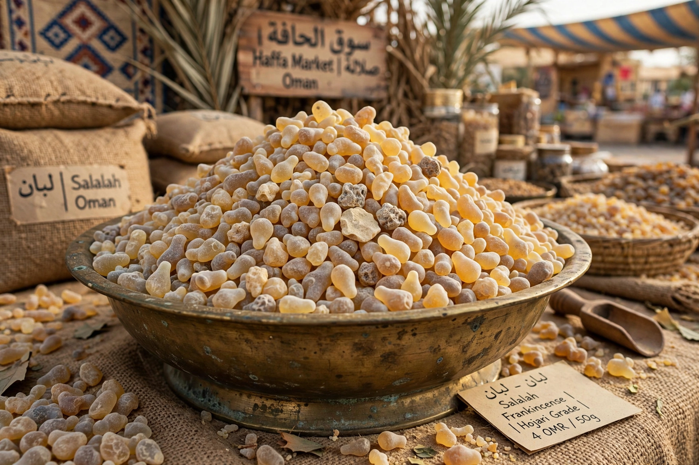

Frankincense
From Wikipedia, the free encyclopedia

Frankincense (also olibanum) is an aromatic resin obtained from trees of the genus Boswellia — chiefly B. sacra of Oman and Yemen, B. papyrifera of Ethiopia and Sudan, and B. serrata of India. Tapped by stripping bark and collecting the hardened 'tears', it has been burned as incense in temples, churches and mosques for five thousand years, traded along the Incense Route from southern Arabia, and given — with gold and myrrh — to the infant Jesus in Matthew's gospel.
Trade and ritual
Frankincense made the kingdoms of South Arabia rich: camel caravans carried it to Gaza, Damascus and Rome, where Nero is said to have burned a year's supply at Poppaea's funeral. Catholic, Orthodox and Coptic liturgies still cense with it; in Dhofar (Oman), the frankincense lands are a UNESCO World Heritage Site and the resin flavours chewing gum and water.
Modern uses and threats
Boswellic acids (from Indian B. serrata) are marketed for inflammatory conditions with mixed trial evidence; perfumery prizes the resinoid. Over-tapping, grazing and land conversion threaten wild Boswellia — researchers warn several species face steep declines this century, prompting tapping rest periods and plantation schemes.